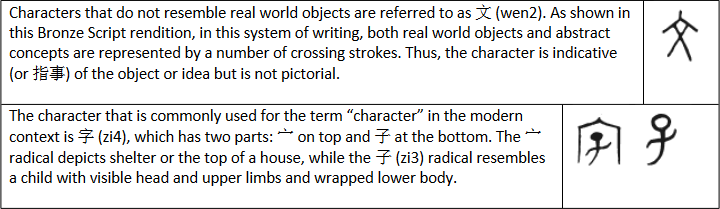

Lesson 5 (Di4 五 Ke4)
We have learned a dozen characters up till now, but we don’t know the Chinese character for “character” yet. Let’s do it.
The Chinese writing system originated in prehistoric times (ruled by the 三Huang2 and 五Di4). It is believed that Fu2 Xi1 invented a trigram system using simple strokes of --- and - - to denote happenings in the world and that rope knot tying (similar to what we saw in Lesson 2) was used during the Sheng2 Nong2 era to record societal activities. The first symbols that could be classified as characters were invented by the scribe (or historian shi3) of Huang2 Di4 (the Yellow Emperor), who was inspired by paw/claw prints and feather/hair patterns that could be used to identify animals.

So, originally, 字 means characters that are “assembled” in-house or derived from combining radicals together in an associative way (meaning that both radicals indicate meaning) where the 子 (zi3) radical also indicates the sound. In Shuo1 文Jie3 字, the (first?) comprehensive dictionary which was compiled in the early second century, more than 10,000 字 (with variations) are listed under 540 radicals (like 文).
When used together, 文字 can mean a “writing system” or an “instance of writing.”
Sample Words Zhong1(中)文 = Chinese (language) 日文 = Japanese (日本Ben3 = Japan) Ying1(英)文 = Einglish Han4(汉)字 = Chinese character (with Han4 representing the first long lasting dynasty after the unification of China by the First Emperor of Qin2). 一ge4(个)字 三字经jing1 过guo4 日子 = live one’s life，where 过= pass or live ; 子
Expressions
Zhe4 个字 中文 zen3mo shuo1？= How to say this character in (Mandarin) Chinese?
这个字中文怎么说?